Leveling Guide
|
Note: Ongoing Content Has been updated with Leveling beyond level 200 and Eden Academy Quest Patch. (Patch Note #183)
Last updated on March 03, 2023 7:45 am |

|
|
| Español | Portuguese |
Introduction
Reminder: Per July 2022 patch, we now have Eden Academy. Since most jobs benefits from Imperial, Noblesse, and Grace sets which can be unlocked from completing Eden Academy Quest, then it is strongly recommended for new players to finish the Quest. Click here for more info Eden_Academy.
This page gives information about common way of leveling, not necessarily the best one. Be sure to check out the available Class Guides to find leveling guides tailored for specific classes. Always remember to advance your class when you are at the appropriate Base and Job level, those are:
- Job level 10 for Novice/High Novice.
- Job level 50 for 1st Classes/Transcendent 1st Classes.
- Base level 99 and Job level 50 for 2nd Classes.
- Base level 99 and Job level 70 for Transcendent 2nd Classes.
- Base level 200 and Job level 70 for 3rd Classes.
Ragnarok is meant to be non-linear, explore! Go craft your own adventures where you're most happy and enjoy your own discoveries! If you just go with the crowd and be like everyone else, you may miss out on a lot of your own kind of fun.
Leveling 1-230+
- Level 1-10:
- Follow tutorial (Mom's Tutorial). You can choose to finish it or not. Judge yourself whether you need it or not. If not, just use command
@go pronteraand go south to kill Poring until level 10. Pros if do Mom's Tutorial: level up to level 14 after kill monster in basement, and got free 50 fly wing and some items. - Change job in Main Office (
@go main, go south west). Talk to npc Jagen the Job Master. Only for acolyte: If you can't add heal skill point, unequip all your current equipment then add the skill point.
- Follow tutorial (Mom's Tutorial). You can choose to finish it or not. Judge yourself whether you need it or not. If not, just use command
- Level 10-85: There are 3 things you can do.
- Get the Free Equipment/ Eden gears. Talk to NPC Secretary Lime Evenor (
@go eden, go north) to join the Eden Group. Get physical set if your class/ build is physical, get magic set if your class is magic. Open the Eden Equipment Chest and you get the Free Eden gears. You can talk to this NPC again when level 100 to get Advanced Eden gears (more powerful Free weapon and equipments). - Do Eden Academy Quest.
@go academy. Talk to Jolene the Receptionist. Open Alt+U for Quest. Left click NPC picture on Alt+U to navigate to the NPC. Here you will do more tutorial to unlock more Free Gears that are better and stronger than Advanced Eden gears. Good for the future upgrade. Read Eden_Academy and your class/build guide for more info about future equipments you will need to aim for. - Kill whatever until level 85.
- Freestyle: Kill whatever monsters. If you have zeny, recommend to buy Scaraba Summoning Scroll and Fly Wing. Also recommend to go to Kiwawa Desert (use command
@go rockthen go right to next map). Use alt+left click to move the Scaraba. Watch video below for this trick. #Leveling Tips - Or Eden Board Quest. Go to Eden HQ
@go eden, go north. You will find several boards there. Talk to it, get the mission you like, then do the quest. Read this page for more details. Eden_Group#Board_Quests - Or do Cautious Village Quest. Read this for more details #Alternative Leveling Method for Expanded Classes. If you want to do this quest, then it is recommended to do it after Rebirth. Because you can only do it once. If you play with Expanded Class such as Gunslinger, Taekwon, or Summoner, then you can do it before Rebirth. Because those classes don't have Rebirth anyway.
- Freestyle: Kill whatever monsters. If you have zeny, recommend to buy Scaraba Summoning Scroll and Fly Wing. Also recommend to go to Kiwawa Desert (use command
- Get the Free Equipment/ Eden gears. Talk to NPC Secretary Lime Evenor (
- Level 85-190: Gramps (with party)
@go eden, then go left. Read#Gramps section for more details.- For normal class like Knight, Crusader, Hunter, Priest, etc: After level 99, don't turn in both Gramp 85+ quest. Go to main office
@go main, talk to NPC Jagen the Job Master to go through rebirth. After rebirth you will be Novice level 1 again. This time level up again until level 80, then turn in 1 Gramp 85+ quest. You should be level 99/70 now and can change to job 3. After changing to job 3, there might be visual bug on your EXP bar. Either ignore it or relogin. Turn in the last Gramp quest. - If your job is Expanded class like Gunslinger, Ninja, or Soul Linker then you don't need rebirth. After level 99, just change job in Main Office to job 3. Then turn in both Gramp quest.
- For normal class like Knight, Crusader, Hunter, Priest, etc: After level 99, don't turn in both Gramp 85+ quest. Go to main office
- Level 190-230:
- Thanatos Tower Floor 12 (warper NPC> dungeons> Thanatos Tower. Go north and talk to NPC Rie Knidge). Recommend to bring water/holy arrow and full party with Minstrel+Wanderer for Mr Kim. (Read here for more info Thanatos Tower#Floor 12).
- Niflheim Dungeon 1 (
@go niflheimand@navi niflheim 148 121. For Niflheim Dungeon 1, minimum level is 200. Read here for more info Nifleheim_Dungeon. - Change to job 4 (go to Main Office) after level 200
- Level 230+:
- Amiticia dungeon (
@go einbroch,@navi ein_fild08 155 94, and talk to NPC Lana. Read here for more info Amicitia_Dungeon) - Thanatos Tower 11/12, keep grinding and farming in there.
- or many other new maps/ dungeons.
- Amiticia dungeon (
Leveling Tips
- Level 1-85:
- Use 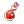 HP Increase Potion(Large). Can be used even at level 1. Buy from players (
@ws hp increase potion(large)). HP for level 1 character: 40. HP after using this potion: 2543. Very good for leveling early. - Use Scaraba Summoning Scroll and 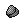 Fly Wing trick. Scarabas are strong and very helpful when leveling against mobs until level 85. You can buy using (
@ws scaraba summoning scroll) command. This video explains the details.
- Use 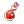 HP Increase Potion(Large). Can be used even at level 1. Buy from players (
- Level 85-145:
- Use Guarana Candy. Cheap and self sufficient Increase Agility so you don't get left behind because you are so slow. (
@ws guarana candy) - Buy 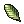 Ygggdrasil Leaf for resurrecting people (double click the item, then click the dead person). Buy at Tool Dealer NPC near every warper.
- Use 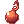 Rejuvenation Potion (regen huge amount of HP per few seconds for 10 minutes). Buy in main office Floor 2, southeast corner.
- Use 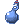 Potion of Energy (regen huge amount of sp per few seconds for 10 minutes). Buy in main office Floor 2, southeast corner.
- Buy
 White Syrup in aldebaran NPC Alchemy Supplies (much better than white potion). Minimum level 60 to use this.
White Syrup in aldebaran NPC Alchemy Supplies (much better than white potion). Minimum level 60 to use this. - Buy Blue Syrup in aldebaran NPC Alchemy Supplies (much better than blue potion). Minimum level 60 to use this.
- Buy 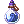 Concentrated Blue Syrup Potion (Buy from player using
@ws Concentrated Blue Syrup Potion) (much better than Blue Syrup). Minimum level 120 to use this.
- Use Guarana Candy. Cheap and self sufficient Increase Agility so you don't get left behind because you are so slow. (
- Level 145-175:
- Use Lv5 Assumptio Scroll. Some classes can be 1 shot by mobs' skill in gramp 145. This will prevent that. Can be made in main office Floor 2, southwest corner.
- Level 175-230:
- Use 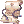 Great Shining Defense Scroll. Stacks with Lv5 Assumptio Scroll. Makes you much harder to kill by mobs in Gramp 175 and Thana12. Need to be bought using Endeavor Token in Main Office Floor 2, NPC is on the north
- Use
 Alice Card for shield card. Gramp 175 and Thanatos Tower 12 mobs are Boss protocol. Buy card from player
Alice Card for shield card. Gramp 175 and Thanatos Tower 12 mobs are Boss protocol. Buy card from player - Use Concentrated Golden Syrup Potion (much better than White Syrup). Minimum level 180 to use this.
- Use these for faster leveling after level 190+ in Thanatos Tower Floor 12, Niflheim Dungeon, Amiticia Dungeon, etc.
- Field Manual (tradable).+ 200% EXP from Mob Kills for 60 minutes. Can be bought from other players or battleground.
@ws 14533. - Field Manual (daily reward). + 100% EXP for 30 minutes. Not tradable.
 Job Battle Manual (daily reward). + 50% Job EXP for 30 minutes. Not tradable.
Job Battle Manual (daily reward). + 50% Job EXP for 30 minutes. Not tradable. HE Battle Manual (daily reward). + 400% EXP from Mob Kills for 30 minutes. Not tradable.
HE Battle Manual (daily reward). + 400% EXP from Mob Kills for 30 minutes. Not tradable.
- Field Manual (tradable).+ 200% EXP from Mob Kills for 60 minutes. Can be bought from other players or battleground.
- The scrolls and pots are expensive. How do I get zeny fast? There is daily reward, which will give you roughly 10 Gold Coin. Login for 1 hour (don't logout). Claim daily login in (
@go main, go south west). Talk to Daily Rewards NPC. After getting Gold Coin, check with command@ws gold coin, see the cheapest price. Talk in #trade, "S> gold coin for X amount of zeny". Set your price cheaper than the cheapest price from @ws or vending. If you have 10 gold coins and sell them for 100k ea, you should get 1m. Then you can use the money to buy@ws Scaraba Summoning Scroll. Disclaimer: (1) Only do this when you are really just starting in NovaRo. If you already can farm and have decent gears, judge by yourself whether to continue this practice or not. (2) Also you can only do this 1 time per day. If you have more than 1 accounts and you want to exploit this, then you risk getting banned. Read this page for more details Daily_Rewards. - Where to change job? In Main Office (
@go main, go south west). Talk to npc Jagen the Job Master. - What to do when Gramp is on cooldown (4 hour)?
- Farming. Read these pages for more details
- Raw Farming Guide and some items to farm Zeny_Guide_and_Farming_101#Farming
- Farming Guide by Alice Play_Genetic_with_Alice#Farming place by Alice
- Some more instances to farm #Third Class and Expandeds Evolution
- Continue leveling outside Gramp. Usually people grind EXP while farming Illusion Stone in illusion dungeons. You can vend Illusion Stone and other stuffs for some zeny. Judge by yourself which illusion dungeons you can grind comfortably in. Read here for more details Illusion_Dungeons
- Do main quest. Start from Episode 16.1 until Episode 17.2 or latest episode. Read this Pages for more details.
- Episode 16.1. Banquet_for_Heroes#Banquet_for_Heroes
- Episode 16.2. Terra_Gloria#Search_for_Terra_Gloria
- Episode 17.1. Illusion#Rudus_Investigation
- Episode 17.2. Sage's_Legacy#Gaining_access_to_Varmundt.27s_Mansion
- Farming. Read these pages for more details
- What is max level difference to share EXP in a party? 30 base levels. More than that means you can't share EXP. Usually you will watch level difference when leveling not in Gramp, like in Thanatos Tower 12, Niflheim Dungeon 1, and Amiticia Dungeon.
- How to search where X mob spawn at? How to know what mob drop X item? etc.
@whereis <monster name>: Displays a list of maps where a particular monster spawns and the spawn amount.@monsterinfo <monster name>: Displays detailed info of a particular monster.@whodrops (Item Name): Displays a list of monsters that drop the particular item and its drop rate.
- I want to know what monster spawn in X map. How to do that?
CTRL + `: Displays the map of all fields in Rune Midgard. Press Alt or Tab to toggle map names, and the name and level of monster with the highest spawn amount on the map.
- Also recommended to read this FAQ page Frequently Asked Questions
Leveling Tips (Old)
- EXP Share: 30 base levels. For example, if someone in your party is 175, then everyone else in the party must be 145 or higher to enable even sharing EXP.
- EXP Boosting Gear: Angel Poring Boots and Heroic Capes are great leveling equipment that can be worn at level 1.
- Before you rebirth: Complete several Lv.91-99 quests (e.g. Rachel/Veins, Glast Heim, Turtle Island quests) while your character is at Lv.99/50. Job change and gain enough levels to turn into High 1st Class (High Swordman, High Thief, High Mage, etc). Then, turn in the Lv.91-99 quests you have completed when you were Lv.99/50 for quick levels.
- Spawn Points::Renewal changed the spawn points of nearly all monsters in the entire game. If you can't find a certain monster, or if you are not sure where to get certain items, try using the following commands:
CTRL + `: Displays the map of all fields in Rune Midgard. Press Alt or Tab to toggle map names, and the name and level of monster with the highest spawn amount on the map.@whereis <monster name>: Displays a list of maps where a particular monster spawns and the spawn amount.@monsterinfo <monster name>: Displays detailed info of a particular monster.@whodrops (Item Name): Displays a list of monsters that drop the particular item and its drop rate.
- Eden Group: Signing up for Eden Group will provide you with levelling gear starting with Eden Equipment Chest [Physical] and [Magical] and a supply of Light Yellow Potions, 100 Light Blue Potions and 100
 Novice Fly Wings. Continuing to do Eden Quests past Level 100 under Headmaster Emme will award you with access to Noblesse, Imperial, and Grace sets which will greatly support your Level 100+ grind.
Novice Fly Wings. Continuing to do Eden Quests past Level 100 under Headmaster Emme will award you with access to Noblesse, Imperial, and Grace sets which will greatly support your Level 100+ grind.
Novice
When you make a new character, you will spawn high above Prontera. This is where your adventure begins! Enter the portal to begin the Novice Tutorial and follow the instructions. It's possible to skip the tutorial if you already did it in another character. However, the Novice Tutorial and the Poring Village Instance will put you right at the 2nd Class, so you can skip all the novice and 1st class part of this guide.
The tutorial also leads to Eden Academy, an extended tutorial highly recommended for all brand-new and returning players alike.
Alternatively, if you choose to skip the tutorial, you may opt to level up your Novice the ol' fashioned way. Stabbing something until it dies. Fortunately, the server is on a 25x XP multiplier so this won't take too long. Below is a table of recommended mobs and where to find them. Most of these mobs would require having ample HIT (which means you're gonna spend those points into DEX) and some like the Fabres would require you to bring pots lest you risk dying while exchanging blows. You can receive a free batch of Novice Potions from Mom if you visit her at Home after skipping (or finishing) the tutorial.
| Monster | # Kills for Job Lvl 10 |
HP | Location |
|---|---|---|---|
| Little Poring | 5 | 40 | moc_para01 Eden Garden Area |
 Poring Poring
|
3 | 55 | moc_para01 Eden Garden Area |
| Drops | 3 | 46 | moc_para01 Eden Garden Area |
| Lunatic | 3 | 48 | prt_fild06 East Prontera Field |
 Fabre Fabre
|
1 | 59 | prt_fild06 East Prontera Field |
| Peco Peco Egg | 1 | 70 | moc_fild12 South Morroc |
| 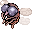 Chonchon | 2 | 48 | gef_fild00 East Geffen Field |
| Eggring | 2 | 50 | lasa_fild01 South Lasagna Field |
| Leaf Lunatic | 2 | 44 | lasa_fild01 South Lasagna Field |
| 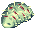 Grass Fabre | 1 | 60 | lasa_fild01 South Lasagna Field |
First Class
- Go to Eden Group
@go eden - Go north and talk to Secretary Lime Evenor and choose Join the Eden Group.
- Remember to check your inventory for the Eden Supplies Lime is going to give you. Open your Eden Equipment Chest and equip your gears.
- Equip the Light Yellow Potions, Light Blue Potions and Novice Fly Wings into your Hotkey to increase survivability while levelling.
- Talk to Instructor Boya, right besides Lime, and accept the quest to participate in the training.
- Go back to Payon Dungeon and walk into the portal.
- Talk to Eden Member Karl at .
- Go back to the Eden Group and talk to Instructor Boya.
- Get back to Payon Dungeon and level up until you reach Base level 50.
- Check the Eden Board 22-40 for various Gathering Quests you can turn-in for additional EXP.
- Note: You can turn them in at the boards itself.
- Check the Eden Board 22-40 for various Gathering Quests you can turn-in for additional EXP.
- Go to the Eden Group and talk to Instructor Boya to get the second training quest.
- Got to Orc Dungeon.
 Warper –› Dungeons –› Orc Dungeon
Warper –› Dungeons –› Orc Dungeon - Walk up the portal and talk to Eden Member Hooksha, at , and get her quest.
- Go back inside, kill 20 Orc Zombie and return to her.
- Go back inside, kill 20 Orc Skeleton and return to her.
- Go back to the Eden Group and talk to Instructor Boya.
- Go back to Orc Dungeon and Level there until you reach base level 71.
- Note: Remember to advance your class once you reach Job level 50.
Second Class
- Go to the Eden Group
@go eden - Talk to Instructor Ur, right beside Boya, and accept his quest.
- Talk to the Mission [71 - 85] Board and take Glast Heim > Evil Druid and Glast Heim > Wraith.
- Go to Glast Heim St. Abbey. Warper –› Dungeons –› Glast Heim –› Glast Heim St.Abbey
- Talk to Johan, at , she is near where you are teleported.
- Wraith and Evil Druid takes double damage from fire or holy element attacks, if your class doesn't have ammunition or spells from those elements you can use Fire Elemental Converter.
- Note: You'll need around 305 HIT to consistently land your attacks on both monsters if you're a physical class.
- Kill 10 Wraiths. Return to Johan and take her new quest.
- Kill 10 Evil Druids. Return to Johan.
- Go back to the Eden Group and talk to Instructor Ur.
- Turn in the quests at the Mission [71 - 85] Board.
- Keep leveling in Glast Heim St. Abbey until you reach base level 85, you can repeat both quests from step 3 as many times as you wish.
Level 85
From this point you can either keep leveling with Eden Board Quests on the second floor or start doing Gramps.
Alternative method to instantly reach 3rd Job after Rebirth
- Pick up both 85-114 Gramps quests and complete them. You will most likely have to stay in Gramps even after reaching 99/50. Do not turn these in.
- Buy 6 Holy Water and 6 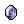 Blue Gemstone from the Tool dealer, then do the Cautious Village quest.
- DO NOT turn in Cautious Village. Stop right after giving the last set of holy water and blue gemstone to the last NPC. DO NOT talk to Mumbaki afterwards.
- Rebirth and equip the novice items you got from the Criatura Academy, if you lost them buy a Knife from any Weapon Dealer.
- Reach Job level 10 and ascend to High 1st Job, below are some ways of reaching it.
- Sloth Quest
- Go to Lasagna.
@go 40 - Talk to Sloth, at , and pick up his quest.
- Kill 3 Red Plant and turn in the quest.
- Turn in Cautious Village to hit job level 50 immediately and ascend to High 2nd Job.
- Turn in both Gramps quests to instantly reach levels 99/70, base and job respectively, and ascend to 3rd Job.
- Get some sleep, Gramps is on cooldown.
Alternative Leveling Method for Expanded Classes
- Follow the Novice section steps.
- Buy 6 Holy Water and 6 Blue Gemstone from the Tool dealer, then do the Cautious Village quest.
- Follow the Second Class section steps.
Alternative Leveling Method for Dorams
- Buy 6 Holy Water and 6 Blue Gemstone from the Tool dealer, then do the Cautious Village quest.
- Complete Instructor Ur's questline for a free set of Eden armor and Weapon, checkout the Second Class section to see the steps.
- You should be Gramps 85+ range at this point.
- You can check the Doram page to learn about their exclusive equipments.
Third Class and Expandeds Evolution
Congratulations, you are one step closer to becoming the number one hero! From this point on you have plenty of ways to level up like Gramps, Instances, Eden Board Quests, quests around the world and hunting MVPs.
If this is your first character it's highly recommended to do as many Eden Board Quests as possible, located at Eden on the second floor. This way, you can start getting  Paradise Coin to buy the new Awaken Paradise Equipment. While we are talking about equipments, have a look at Mora Equipment, they have plenty of useful sets for some classes.
Paradise Coin to buy the new Awaken Paradise Equipment. While we are talking about equipments, have a look at Mora Equipment, they have plenty of useful sets for some classes.
It's also recommended to do these two instances as soon as possible:
- Sara's Memory
- This instance gives a good amount of XP and plenty of food to boost your stats.
- If you only want to pickup the +6 stats food you can turnoff
@autolootand use@alootid +12071|+12086|+12081|+12076|+12091|+12096. - This will make you loot: Shiny Marinade Beef Chilly Shrimp Gratin 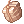 Awfully Bitter Bracer Red Mushroom Wine Peach Cake
 Lucky Soup
Lucky Soup
- Ghost Palace
- This instance allows you to buy the Thanatos Weapons, the leech effect they provide is really useful.
Below are some quick, useful quests to get more experience.
Level 100
Illusion Dungeons
Starting from Level 100, Illusion Dungeons become accessible. These dungeons give a nice amount of EXP, have some possibly useful equipment for certain classes/builds, and drop some useful cards.
Notably, Illusion of Underwater (Level 140+) and Illusion of Luanda (Level 160+) have Item Turn-in Quests, which allow lesser geared characters to gain some EXP without killing monsters, provided they have the required items, either from hunting the monsters or buying from other players.
New World Access Quest
This is a pre-requisite for the Banquet for Heroes questline. You must have 50,000 zeny to complete this quest.
- Go to the Eden Group.
@go eden - Speak to the Cat Hand Agent .
- Select "Why don't you collect it yourself?"
- Then "I'll help the merchants."
- Speak with Cat to the right.
- Select "Let's do this!"
- After being teleported, go north and speak to the Cat Hand Agent .
- Select "To the other world!"
- After teleporting, the quest is complete. You may now continue with the Banquet for Heroes.
Banquet for Heroes
- It is recommended to do the Banquet for Heroes main quests and some of the optional quests.
- Learning About the Families
- Ritual of Blessing
- Room of Consciousness (Two of the bosses have 10 million HP. Bring a powerful ally.)
- The Geoborgs
- The Royal Head Chef
- All of these quests will grant a total of 155m Base/120m Job Experience simply by talking to NPCs, except from Room of Consciousness, and should be enough for you to reach Base Level 115 to do the [115-145] Gramps.
Rock Ridge
Doing the Rock Ridge introductory questline will net you a good amount of experience, you can also buy equipments using the 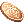 Rock Ridge Coin.
Level 140
Banquet for Heroes
- If you've done the questline shown above for Banquet for Heroes, you'll unlock 1 quest (gives a lot of Experience) and some repeatable Daily Quests.
- Start off by buying a Flower from Flower Lady, at .
- Go to the Prontera Prison located northeast of the Banquet Hall. Full information of the quest can be found at Restricted Sector.
- Inside the prison there are 8 NPCs, 7 of which will give you a daily quest.
- Finishing Restricted Sector requires you to only talk to each NPC inside, so you don't need to finish any of their quests. Although you will receive a decent amount of experience by completing them (35m Base/35m Job each).
- There's also one quest located at Invaded Prontera (unlocked once you finish Room of Consciousness).
- How to get there: Warper –› Instances –› Sky Fortress .
- How to get there:
- Speak to Chief Guard, at , to get a daily quest.
- Full information can be found here Chief Guard Requests.
All of these quests, except for Restricted Sector, are daily quests (resets at 4 AM server time).
- The first time you do them they will give you around 400m Base/400m Job EXP, after that they will start to give you 295m Base/295m Job.
Verus
Doing Verus Daily Quests is a good source to gain some experience, to do most of them you need to join the Phantasmagorica Excavation Team.
Gramps
| This quest or instance is repeatable. |
|---|
| The cooldown is 4 hours. |
In Gramps quests, you will level super fast (especially if you join a big party). This is great if you just want to reach max level as soon as possible to join PvP/WoE and for efficiency in farming. But it's not the only way to level up, you don't have to choose between the Eden Questlines, Eden Boards and Gramps.
Information
- In these quests, you are required to kill 400 monsters of two types.
- The hunted monsters are rotated once a month.
- You can find a party in the Eden Headquarters
- There you can do
Alt+C> (LFM> <level range> <roles>) or in the #lfg channel. - Type
@lfg onand then use either of these terms:
- LFP> Gramps <level range> <role> (Looking for a Party)
- LFM> Gramps <level range> <roles> (Looking for a Party Member)
- To get a kill credit on the monster, you must be on the screen.
- There are four level ranges:
- Level 85-114
- Level 115-144
- Level 145-174
- Level 175-200
- Note: You cannot enter areas lower or higher your level even if your quest is incomplete
- There is a specific loot system on Gramps maps:
- Weapon and Armor type items don't drop from mobs.
- If you have reached max level of the zone you are in, mobs will no longer drop items.
- If you do not have active Gramps quests, mobs will no longer drop items.
- If you have guild tax, mobs will drops items at a lower rate the higher your tax rate is.
- Monsters in Gramps don't cast a number of problematic skills:
- Waterball
- Hide
- Cloaking
- Reflect Shield
- Magic Mirror
- Defender
- Quagmire
Walkthrough
- To start the two quests speak to the Monthly Hunts Board at the top left of Eden (
@go eden). Accept both quests in your level range. - Select the appropriate quest:
- "Monthly Map Name" [85-114]
- "Monthly Map Name" [115-144]
- "Monthly Map Name" [145-175]
- "Monthly Map Name" [175-200]
- Talk to Gramps (right) and choose Can you warp me?.
- You will not be able to enter the map again if you leave and are out of the level range. However you can still defeat them:
- Type
@whereis <monster name>followed by@navi <map_name>to finish your kill count and turn it in.
- Type
- A party usually consists of:
- Tank/Lurer: Their job is to collect monsters and bring it to the party. (Mostly Swordsman/Thief/Acolyte branch)
- AoE: Their job is to kill the mass brought to the party by the lurer. (Mostly Hunter/Mage/Gunslinger branch)
- Support: Their job is to replenish HP/SP and provide buffs. (Mostly Priest/Sage/Performer branch)
- DPS: Their job is to kill single monsters left out and harass the Support. (Mostly Thief/Knight branch)
- The Party Setup is always 'Even Share' on all three settings (
ALT+Z> Magnifier Glass at the bottom) set by the party leader. - Note that if you have no AoE damage but you're a Damage class, you can be and please BE useful. Don't auto follow people. Defend your support and help the party to keep moving.
- Convenio is helpful if an Arch Bishop can mob and survive the Convenio cast as the party leader. However you will fall behind in kills as the party will kill things while you are teleporting to different areas of the map.